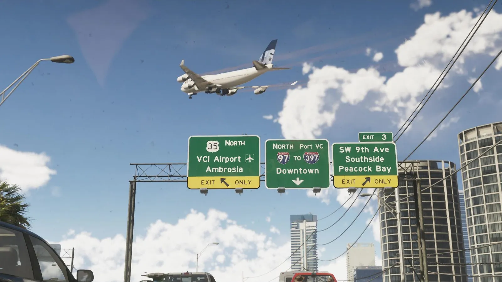
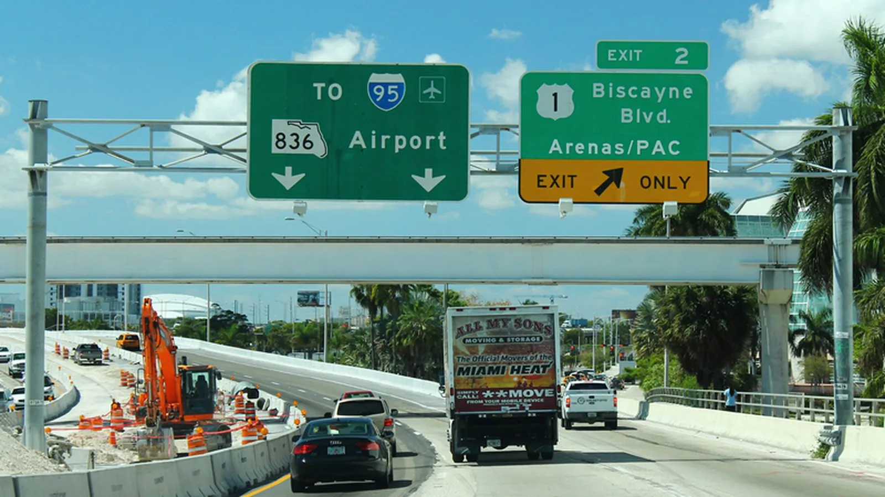
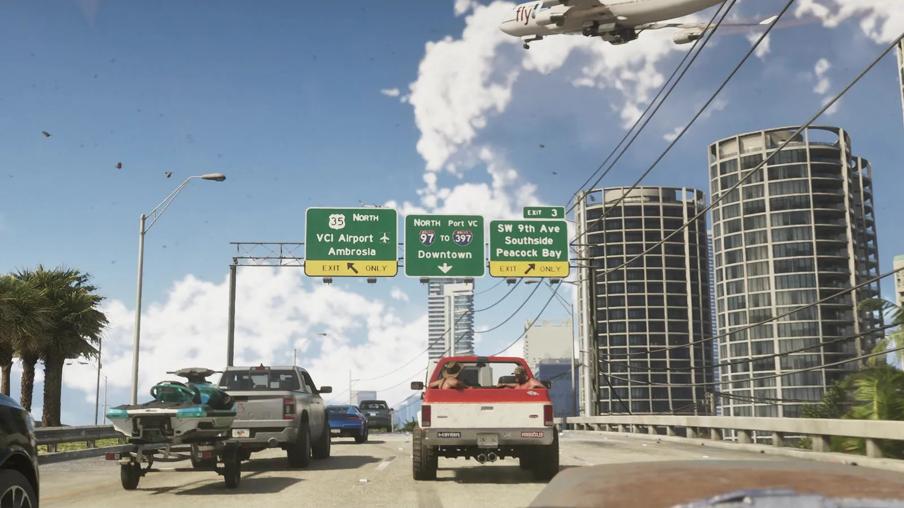

Указатели на трассах Вайс-Сити и Майами
Опубликовано:
Зелёные щиты, белые буквы, сине-красные щиты трасс и жёлтые плашки EXIT ONLY — всё по американскому стандарту, как над трассами Майами. Изменены только номера и названия.


- Во втором трейлере над трассой висят три зелёных указателя: к аэропорту и Амброзии, к центру и порту, к району Peacock Bay.
- Оформление совпадает с реальными указателями США до мелочей: шрифт, цвета, щиты трасс, жёлтые плашки EXIT ONLY.
- В игре «97 to 397», в Майами — «95 to 395»: номера сдвинуты на два, логика та же.
- Стандарт для всех дорожных знаков США задаёт федеральное руководство MUTCD.
Что в игре
Кадр из второго трейлера: машина стоит в пробке на эстакаде, над головой заходит на посадку огромный самолёт. Над трассой — три указателя:
- US 35 North — VCI Airport, Ambrosia, значок самолёта, жёлтая плашка EXIT ONLY;
- North Port VC — 97 to 397 — Downtown, стрелка вниз;
- Exit 3 — SW 9th Ave, Southside, Peacock Bay, жёлтая плашка EXIT ONLY.

Что в реальности
Все дорожные знаки США подчиняются одному федеральному руководству — MUTCD. Указатели направлений на автомагистралях — зелёные с белыми буквами. Номер межштатной трассы ставят в сине-красный щит, федеральной — в белый. Жёлтая плашка EXIT ONLY внизу щита значит, что полоса под ним уходит на съезд.
В Майами главная магистраль — I-95, она идёт вдоль всего восточного побережья до границы с Канадой в штате Мэн. От неё к заливу отходит короткая I-395 — к дамбе MacArthur Causeway, порту и Майами-Бич. Трёхзначный номер с нечётной первой цифрой означает ответвление от основной трассы. В игре та же схема: «97 to 397» — основная трасса и её ответвление.
Развязку I-395 в центре Майами перестраивают с 2016 года: над ней строят вантовый «Signature Bridge» с арками высотой до 99 м. Закончить обещали в 2024 году, потом срок сдвинули на 2027-й, затем на 2029-й. Так что указатели на реальной I-395 ещё не раз поменяются, а в Вайс-Сити трасса уже готова.
Совпадает и отличается
| Майами | GTA 6 | |
|---|---|---|
| Зелёные щиты, белые буквы | Да | 🟢 Да |
| Сине-красный щит межштатной трассы | I-95, I-395 | 🟢 I-97, I-397 |
| Жёлтая плашка EXIT ONLY | Да | 🟢 Да |
| Значок аэропорта | Да | 🟢 Да |
| Номера и названия | Реальные | 🟡 Свои, сдвинуты |
Источники: Rockstar Games (трейлер 2 GTA 6); Federal Highway Administration — MUTCD; Florida Department of Transportation — проект I-395/SR-836/I-95.
Реальные фото: Фото: formulanone from Huntsville, United States, CC BY-SA 2.0 · Wikimedia Commons. Кадры игры: Rockstar Games.
Каждый день — одно сравнение: кадр игры рядом с реальным фото. Подписывайтесь:
YouTubeInstagramTikTok